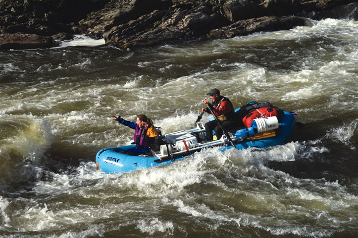

Southwestern Oregon is a great place to live, with amazing scenery, a mild climate, recreational opportunities at every turn and a high level of support for sustainability. Ashland and Medford - just north of the California border - are wonderful places, but real estate prices there may be too expensive for many people. A better bet is Grants Pass - about 60 miles north of California - which is more affordable while offering many of the same benefits.
“Grants Pass is about 20 percent lower priced than most of the Ashland area, and about 5 percent to 8 percent lower than the Medford area,” says local real estate agent Don Eaton. “Property taxes are also lower in Grants Pass. The most affordable areas in southern Oregon are in the Illinois River Valley, southwest of Grants Pass and north of Grants Pass between Sunny Valley and Roseburg.”
Grants Pass is a small city surrounded by big, beautiful wilderness. There are numerous parks that make the Rogue River accessible for float trips and fly fishing, as well as hiking the many riverside trails. Oregon Caves National Monument is just 20 miles east of town; there you can go down into the caves or hike the many trails, some of which ascend to 5,500 feet.
The local Growers’ Market is the largest open-air market in Oregon, and is open Saturday mornings from March until Thanksgiving. The area is also famous for its pears, with more than 10,000 acres of orchards.
The arts thrive in Grants Pass - there’s a Museum of Art, the Rogue Music Theatre, a professional theater group and several amateur and youth theater groups.
Do you live in Grants Pass? Have you visited? Please post your comments below.
Population: 27,195
County: Josephine
Climate: Not too hot, not too cold; hence the local slogan: “It’s the climate.”
Cost of living index: 95.9
Median home price: $177,000
Alternative energy: net metering; incentives for renewable energy and energy efficiency
Don’t miss: the Rogue River for fishing, rafting or relaxing
|
 GREG VAUGHN The Rogue River offers exhilarating outdoor recreation. |
|
|